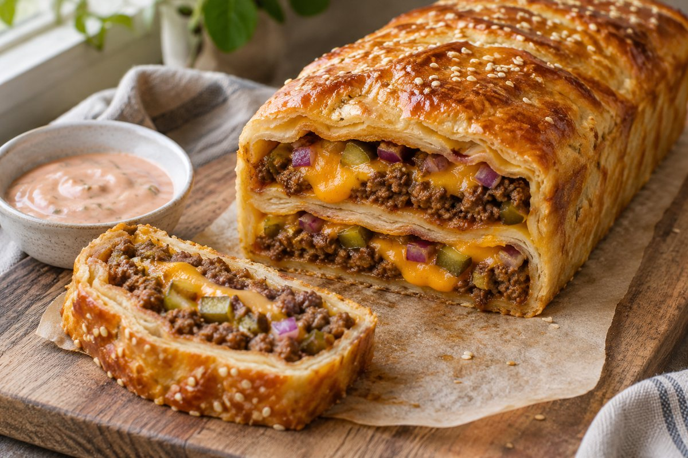

Cheeseburger-Kuchen

Herzhafter Kuchen aus Pizzateig mit Rinderhackfleisch, Schmelzkäse, roter Zwiebel und sauren Gurken sowie einer Sauce aus Skyr, Miracel Whip und Ketchup.
Zutaten
Für den Kuchen
- 400 g fertiger Pizzateig
- 400 g Rinderhackfleisch Light
- 6 Scheiben Toast-Schmelzkäse
- 1 rote Zwiebel
- Ca. 60 g Cornichons / saure Gurken
- Gewürze nach Wahl für das Hackfleisch, z. B. Salz, Pfeffer und Knoblauchgewürz (im Original als Beispiel: More Spices Knobilicious)
Für die Sauce
- 150 g Skyr Natur
- 110 g Miracel Whip Balance
- 70 g Ketchup Light
- Etwas Gurkenwasser
- Wasser: ca. 50–100, Einheit in der Quelle unklar (dort steht „min“)
- Salz und Pfeffer für die Sauce
- Optional: Worcestersauce
Zum Bestreichen und Bestreuen (nur im Zubereitungstext genannt)
- Eigelb zum Bestreichen (Menge nicht angegeben)
- Sesam zum Bestreuen (Menge nicht angegeben)
Zubereitung
- Das Hackfleisch mit Gewürzen nach Wahl würzen und anbraten.
- Für die Sauce Skyr, Miracel Whip Balance, Ketchup Light, etwas Gurkenwasser und etwas Wasser zur Milderung der Säure miteinander verrühren. Mit Salz und Pfeffer abschmecken. Wer mag, kann noch etwas Worcestersauce hinzufügen.
- Den fertigen Pizzateig mittig in eine Kastenform legen, sodass die Seiten über den Rand hinausragen.
- Zuerst drei Scheiben Toast-Schmelzkäse hineinlegen, anschließend das Hackfleisch darauf verteilen. Die Zwiebel und die Gurken klein schneiden und darübergeben.
- Nun die erste Seite des Pizzateigs einschlagen und die restlichen Zutaten in derselben Reihenfolge darauf verteilen. Anschließend alles mit der anderen Teigseite verschließen.
- Den Cheeseburger-Kuchen mit Eigelb bestreichen und mit Sesam bestreuen.
- Bei 180–200 °C für ca. 12–15 Minuten goldbraun backen.
Hinweise zur Quelle
Rezept nach den bereitgestellten Screenshots der Original-Caption. Bei der Wassermenge steht „50–100 min“; die Einheit ist unklar und wurde nicht eigenständig zu ml geändert. Eigelb und Sesam sind nur in der Zubereitung genannt, ohne Mengenangabe. Portionszahl, Vorbereitungs- und Gesamtzeit sowie Ofenbetriebsart und Größe der Kastenform sind nicht angegeben. Der Backzeitbereich von ca. 12–15 Minuten bleibt im Zubereitungsschritt erhalten; ein einzelner Zeitwert wurde nicht daraus abgeleitet. Die Quelle beschreibt nicht ausdrücklich, wann die Sauce verwendet wird. Die Aufteilung der Füllung auf die zwei Schichten ist nicht näher beziffert.
Originalquelle: Instagram-Reel